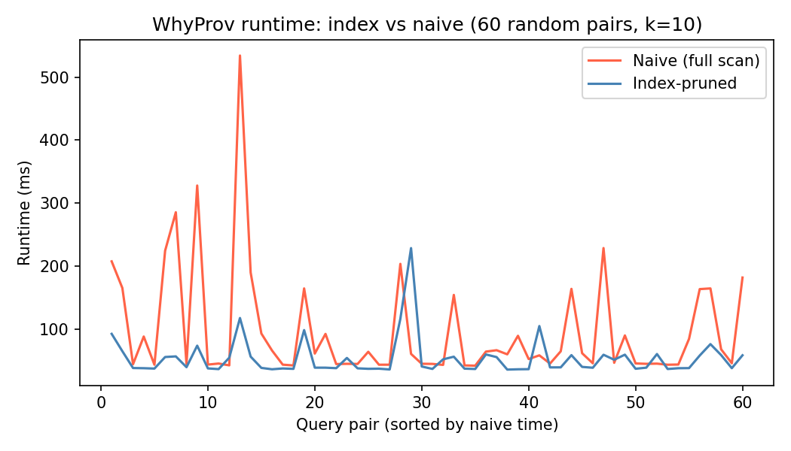
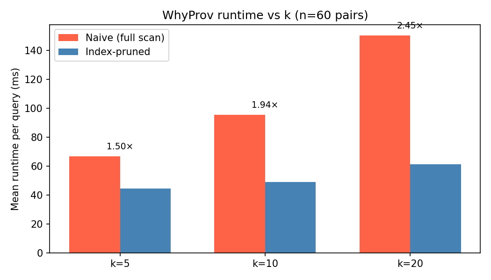
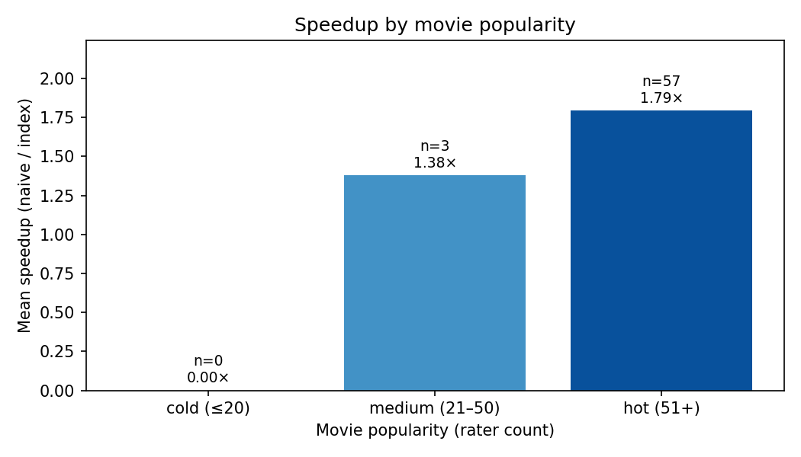

Data and Query Provenance for Explainable Movie Recommendations
Qianyi Chen (Alfred) · Solo · CSDS 234
Prof. Yinghui Wu · Case Western Reserve University
May 2026
Motivation
"Why was this recommended?"
Netflix recommends Fargo to Alfred. Why? Was it his love for Pulp Fiction?
His rating of Shawshank? Some pattern shared with strangers he'll never meet?
Regulatory pressure: GDPR Article 22 — users have the right to "meaningful information" about automated decisions.
Product trust: explainable recommendations build user confidence and unlock content discovery.
Today's CF models (matrix factorization, SVD) hide their reasoning in 50-dim latent vectors — black-box by construction.
→ Most existing explanation methods modify the model (hurts accuracy) or generate post-hoc text (may not be faithful).
→ Our angle: explain via the database, using formal data provenance.
Problem · Formal
Two query classes
1. Why-Provenance
Input: user u, movie m ∈ TopK(u, k)
Output: minimal W ⊆ R such that m ∉ TopKR\W(u, k)
"Which ratings caused this recommendation?"
2. Query Rewrite
Input: user u, target movie t ∉ TopK(u, k)
Output: minimal edit e such that t ∈ TopKR+e(u, k)
"What change would surface this movie?"
Generality requirement (per professor's approval):
Method must work for any user, any movie, any k ∈ [1, 20] —
not just hand-picked demo cases.
Approach
Inverted index for pruning
Naive search: consider all raters of m — up to O(|R|) per query.
Our index: precompute, for each movie, the top-C = 50 highest-rating contributors. Search becomes O(C).
Key insight: a movie's predicted score is dominated by its strongest raters. If they don't move the needle, the long tail won't either.
ALGORITHM WhyProv(u, m, k, index I)
1. contributors ← I.lookup(m) # top-C, O(C) lookup
2. removed ← ∅ ; witness ← []
3. FOR each (c, w) IN contributors sorted by w DESC:
4. removed ← removed ∪ {c}
5. witness.append((c, m))
6. score_m ← ScoreDecayApprox(u, m, removed) # †
7. threshold ← Predict(u, TopK(u,k)[k-1])
8. IF score_m < threshold OR m ∉ TopK(u, k):
9. RETURN witness # minimal!
10. RETURN witness
† Score-decay approximation: instead of re-training SVD per query (seconds),
scale the base score by the removed-weight fraction.
Rank-monotonic — sufficient for top-k membership decisions.
Experiments · Result 1
Index vs. naive: 1.77× speedup at k=10
Setup: MovieLens 100K · 60 random (user, movie) pairs sampled
from each user's top-20 · k = 10 · seed = 42 · M-series laptop.
49 msindex-pruned WhyProv
95 msnaive full scan
1.77×speedup, every query
In none of the 60 pairs does the naive baseline beat the index.
The witness sets are also smaller, because the index terminates earlier.

Experiments · Result 2 + 3
Speedup grows with k and with movie popularity
Effect of k
k
Index
Naive
Speedup
5
44 ms
67 ms
1.50×
10
49 ms
95 ms
1.94×
20
61 ms
150 ms
2.45×
✦ Larger k → naive scan does more per-query work → bigger pruning win.
Effect of popularity
Hot movies (>50 raters): 1.79× · Medium (21–50): 1.38×.
✦ The index pays off when there's a long rater tail to prune.


Limitations · Future Work
What's missing — and what's next
Limitations (acknowledged)
Score-decay approximation is rank-monotonic but not the true counterfactual SVD re-evaluation.
QueryRewrite restricted to single-rating additions — no removals or multi-edits.
Top-k sampling is popularity-biased — no cold movies in our 60 pairs.
Single dataset (MovieLens 100K only).
Future work
Validate score-decay vs. true counterfactual SVD on a small sample.
Multi-hop provenance — explain the explainers themselves.
Scale to MovieLens 1M / 25M.
Human study: are why-provenance explanations more trusted than attention-based ones?
Integrate with sequence models (SASRec, BERT4Rec).
Conclusion
Database provenance, applied.
A formal, faithful, and fast way to explain collaborative-filtering recommendations.